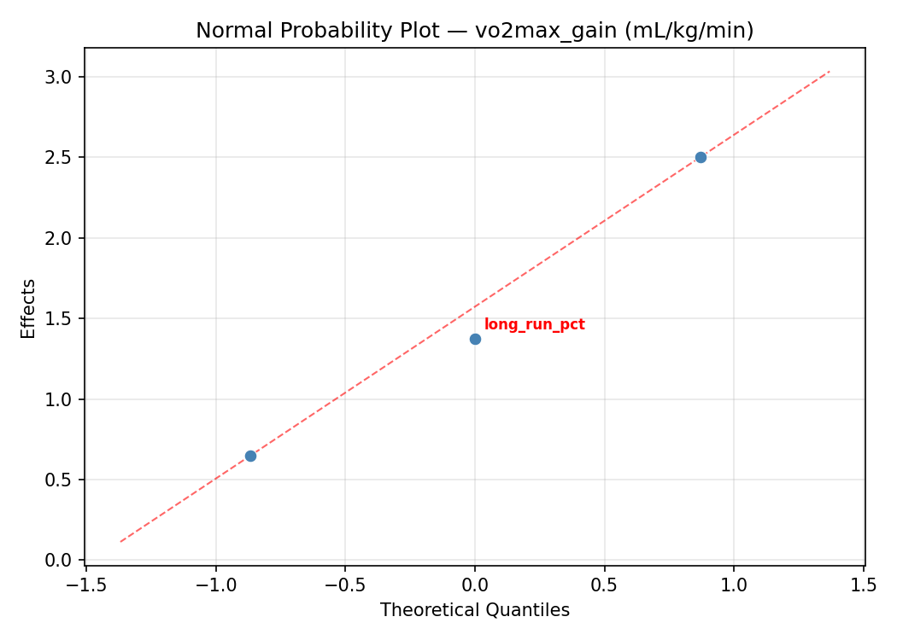
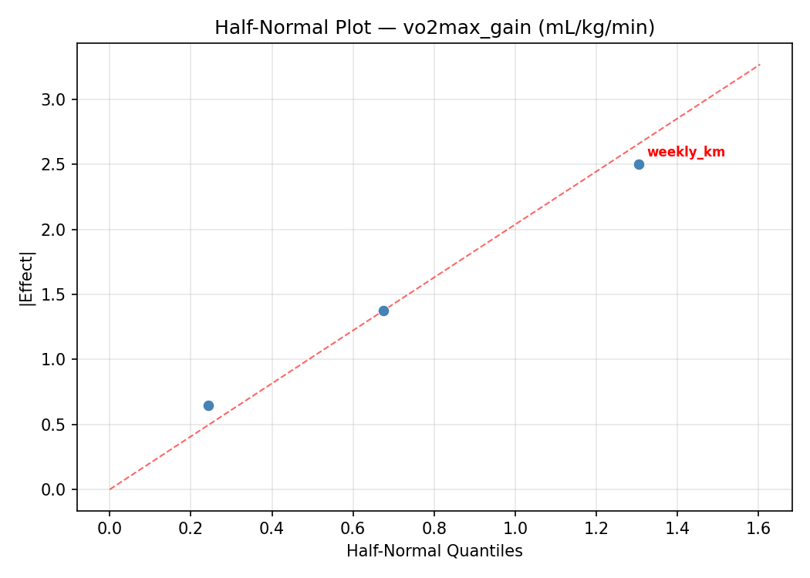
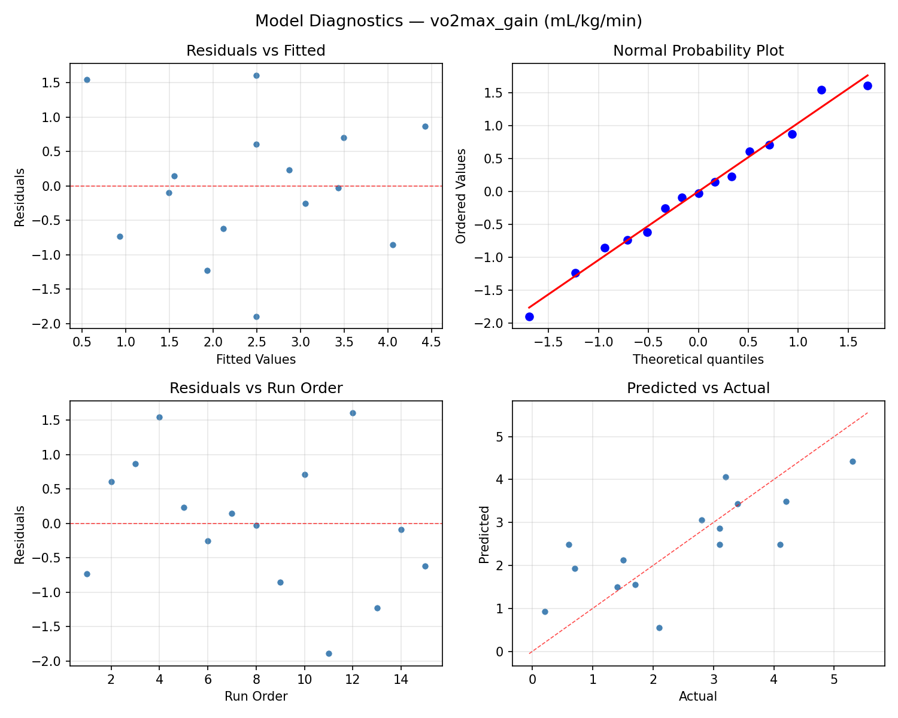
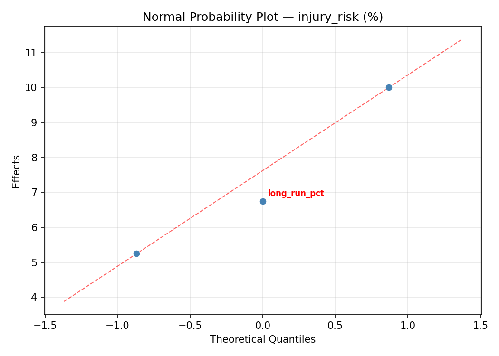
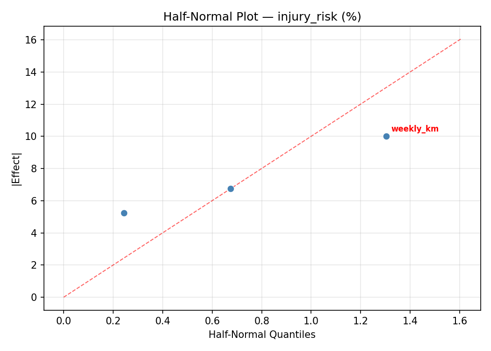
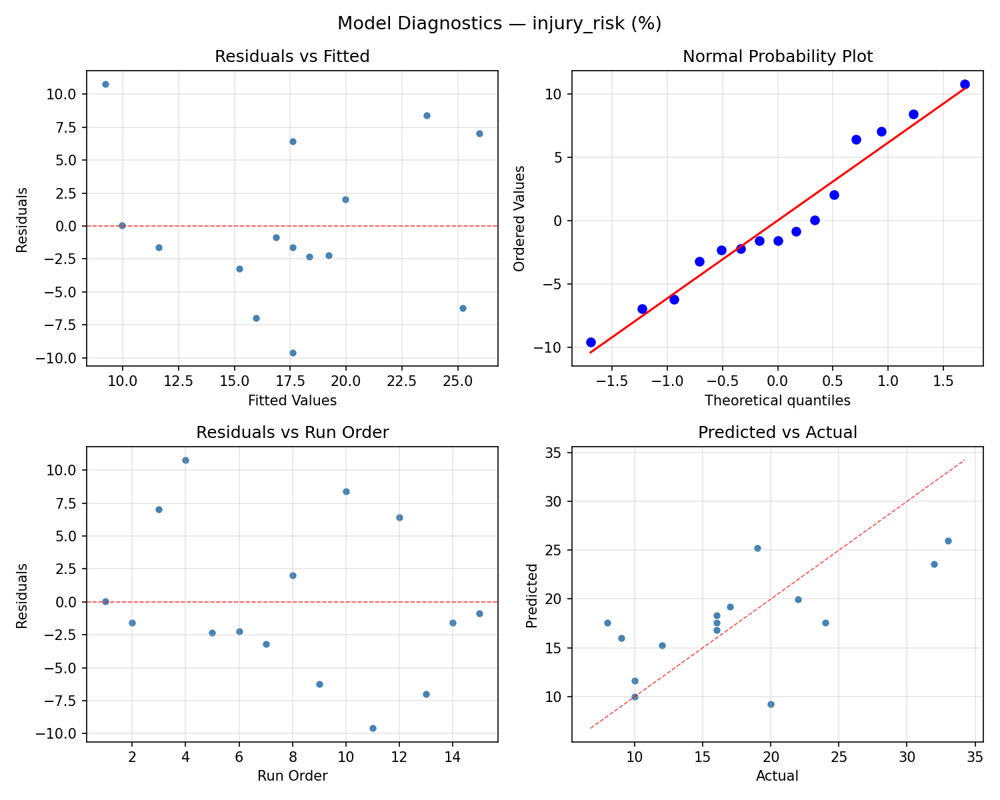

Summary
This experiment investigates running training plan. Box-Behnken design to maximize VO2max improvement and minimize injury risk by tuning weekly mileage, long run percentage, and interval intensity.
The design varies 3 factors: weekly km (km), ranging from 20 to 60, long run pct (%), ranging from 20 to 40, and interval pct max (%HR_max), ranging from 80 to 100. The goal is to optimize 2 responses: vo2max gain (mL/kg/min) (maximize) and injury risk (%) (minimize). Fixed conditions held constant across all runs include rest days = 2, runner level = intermediate.
A Box-Behnken design was chosen because it efficiently fits quadratic models with 3 continuous factors while avoiding extreme corner combinations — requiring only 15 runs instead of the 8 needed for a full factorial at two levels.
Quadratic response surface models were fitted to capture potential curvature and factor interactions. The RSM contour plots below visualize how pairs of factors jointly affect each response.
Key Findings
For vo2max gain, the most influential factors were long run pct (45.4%), interval pct max (30.7%), weekly km (23.9%). The best observed value was 5.3 (at weekly km = 60, long run pct = 20, interval pct max = 90).
For injury risk, the most influential factors were interval pct max (35.4%), weekly km (34.9%), long run pct (29.8%). The best observed value was 8.0 (at weekly km = 20, long run pct = 40, interval pct max = 90).
Recommended Next Steps
- Run confirmation experiments at the predicted optimal settings to validate the model.
- Consider whether any fixed factors should be varied in a future study.
Experimental Setup
Factors
| Factor | Low | High | Unit |
|---|
weekly_km | 20 | 60 | km |
long_run_pct | 20 | 40 | % |
interval_pct_max | 80 | 100 | %HR_max |
Fixed: rest_days = 2, runner_level = intermediate
Responses
| Response | Direction | Unit |
|---|
vo2max_gain | ↑ maximize | mL/kg/min |
injury_risk | ↓ minimize | % |
Configuration
{
"metadata": {
"name": "Running Training Plan",
"description": "Box-Behnken design to maximize VO2max improvement and minimize injury risk by tuning weekly mileage, long run percentage, and interval intensity"
},
"factors": [
{
"name": "weekly_km",
"levels": [
"20",
"60"
],
"type": "continuous",
"unit": "km"
},
{
"name": "long_run_pct",
"levels": [
"20",
"40"
],
"type": "continuous",
"unit": "%"
},
{
"name": "interval_pct_max",
"levels": [
"80",
"100"
],
"type": "continuous",
"unit": "%HR_max"
}
],
"fixed_factors": {
"rest_days": "2",
"runner_level": "intermediate"
},
"responses": [
{
"name": "vo2max_gain",
"optimize": "maximize",
"unit": "mL/kg/min"
},
{
"name": "injury_risk",
"optimize": "minimize",
"unit": "%"
}
],
"settings": {
"operation": "box_behnken",
"test_script": "use_cases/108_running_performance/sim.sh"
}
}
Experimental Matrix
The Box-Behnken Design produces 15 runs. Each row is one experiment with specific factor settings.
| Run | weekly_km | long_run_pct | interval_pct_max |
|---|
| 1 | 40 | 20 | 80 |
| 2 | 40 | 30 | 90 |
| 3 | 60 | 30 | 100 |
| 4 | 60 | 30 | 80 |
| 5 | 40 | 30 | 90 |
| 6 | 40 | 30 | 90 |
| 7 | 20 | 30 | 100 |
| 8 | 60 | 20 | 90 |
| 9 | 40 | 20 | 100 |
| 10 | 60 | 40 | 90 |
| 11 | 20 | 30 | 80 |
| 12 | 40 | 40 | 100 |
| 13 | 20 | 20 | 90 |
| 14 | 20 | 40 | 90 |
| 15 | 40 | 40 | 80 |
Step-by-Step Workflow
1
Preview the design
$ python doe.py info --config use_cases/108_running_performance/config.json
2
Generate the runner script
$ python doe.py generate --config use_cases/108_running_performance/config.json \
--output use_cases/108_running_performance/results/run.sh --seed 42
3
Execute the experiments
$ bash use_cases/108_running_performance/results/run.sh
4
Analyze results
$ python doe.py analyze --config use_cases/108_running_performance/config.json
5
Get optimization recommendations
$ python doe.py optimize --config use_cases/108_running_performance/config.json
6
Multi-objective optimization
With 2 competing responses, use --multi to find the best compromise via Derringer–Suich desirability.
$ python doe.py optimize --config use_cases/108_running_performance/config.json --multi
7
Generate the HTML report
$ python doe.py report --config use_cases/108_running_performance/config.json \
--output use_cases/108_running_performance/results/report.html
Features Exercised
| Feature | Value |
|---|
| Design type | box_behnken |
| Factor types | continuous (all 3) |
| Arg style | double-dash |
| Responses | 2 (vo2max_gain ↑, injury_risk ↓) |
| Total runs | 15 |
Analysis Results
Generated from actual experiment runs using the DOE Helper Tool.
Response: vo2max_gain
Top factors: long_run_pct (45.4%), interval_pct_max (30.7%), weekly_km (23.9%).
ANOVA
| Source | DF | SS | MS | F | p-value |
|---|
| Source | DF | SS | MS | F | p-value |
| weekly_km | 2 | 2.2933 | 1.1466 | 0.243 | 0.7895 |
| long_run_pct | 2 | 10.3375 | 5.1688 | 1.097 | 0.3792 |
| interval_pct_max | 2 | 4.4972 | 2.2486 | 0.477 | 0.6370 |
| Lack | of | Fit | 6 | 4.0013 | 0.6669 |
| Pure | Error | 2 | 9.4200 | | |
| Error | 8 | 13.4213 | 4.7100 | | |
| Total | 14 | 30.5493 | 2.1821 | | |
Pareto Chart

Main Effects Plot

Normal Probability Plot of Effects

Half-Normal Plot of Effects

Model Diagnostics

Response: injury_risk
Top factors: interval_pct_max (35.4%), weekly_km (34.9%), long_run_pct (29.8%).
ANOVA
| Source | DF | SS | MS | F | p-value |
|---|
| Source | DF | SS | MS | F | p-value |
| weekly_km | 2 | 157.9929 | 78.9964 | 0.487 | 0.6318 |
| long_run_pct | 2 | 90.6714 | 45.3357 | 0.279 | 0.7634 |
| interval_pct_max | 2 | 161.4214 | 80.7107 | 0.497 | 0.6259 |
| Lack | of | Fit | 6 | 98.8476 | 16.4746 |
| Pure | Error | 2 | 324.6667 | | |
| Error | 8 | 423.5143 | 162.3333 | | |
| Total | 14 | 833.6000 | 59.5429 | | |
Pareto Chart

Main Effects Plot

Normal Probability Plot of Effects

Half-Normal Plot of Effects

Model Diagnostics

Response Surface Plots
3D surfaces fitted with quadratic RSM. Red dots are observed data points.
injury risk long run pct vs interval pct max

injury risk weekly km vs interval pct max

injury risk weekly km vs long run pct

vo2max gain long run pct vs interval pct max

vo2max gain weekly km vs interval pct max

vo2max gain weekly km vs long run pct

Multi-Objective Optimization
When responses compete, Derringer–Suich desirability finds the best compromise.
Each response is scaled to a 0–1 desirability, then combined via a weighted geometric mean.
Overall Desirability
D = 0.6338
Per-Response Desirability
| Response | Weight | Desirability | Predicted | Dir |
|---|
vo2max_gain |
1.5 |
|
3.30 0.5978 3.30 mL/kg/min |
↑ |
injury_risk |
2.0 |
|
16.04 0.6622 16.04 % |
↓ |
Recommended Settings
| Factor | Value |
|---|
weekly_km | 36 km |
long_run_pct | 20 % |
interval_pct_max | 100 %HR_max |
Source: from RSM model prediction
Trade-off Summary
Sacrifice = how much worse than single-objective best.
| Response | Predicted | Best Observed | Sacrifice |
|---|
injury_risk | 16.04 | 8.00 | +8.04 |
Top 3 Runs by Desirability
| Run | D | Factor Settings |
|---|
| #5 | 0.6182 | weekly_km=40, long_run_pct=20, interval_pct_max=100 |
| #6 | 0.5735 | weekly_km=60, long_run_pct=30, interval_pct_max=100 |
Model Quality
| Response | R² | Type |
|---|
injury_risk | 0.9497 | quadratic |
Full Multi-Objective Output
============================================================
MULTI-OBJECTIVE OPTIMIZATION
Method: Derringer-Suich Desirability Function
============================================================
Overall desirability: D = 0.6338
Response Weight Desirability Predicted Direction
---------------------------------------------------------------------
vo2max_gain 1.5 0.5978 3.30 mL/kg/min ↑
injury_risk 2.0 0.6622 16.04 % ↓
Recommended settings:
weekly_km = 36 km
long_run_pct = 20 %
interval_pct_max = 100 %HR_max
(from RSM model prediction)
Trade-off summary:
vo2max_gain: 3.30 (best observed: 5.30, sacrifice: +2.00)
injury_risk: 16.04 (best observed: 8.00, sacrifice: +8.04)
Model quality:
vo2max_gain: R² = 0.8881 (quadratic)
injury_risk: R² = 0.9497 (quadratic)
Top 3 observed runs by overall desirability:
1. Run #2 (D=0.6182): weekly_km=40, long_run_pct=30, interval_pct_max=90
2. Run #5 (D=0.6182): weekly_km=40, long_run_pct=20, interval_pct_max=100
3. Run #6 (D=0.5735): weekly_km=60, long_run_pct=30, interval_pct_max=100
Full Analysis Output
=== Main Effects: vo2max_gain ===
Factor Effect Std Error % Contribution
--------------------------------------------------------------
long_run_pct 1.9464 0.3814 45.4%
interval_pct_max 1.3179 0.3814 30.7%
weekly_km 1.0250 0.3814 23.9%
=== ANOVA Table: vo2max_gain ===
Source DF SS MS F p-value
-----------------------------------------------------------------------------
weekly_km 2 2.2933 1.1466 0.243 0.7895
long_run_pct 2 10.3375 5.1688 1.097 0.3792
interval_pct_max 2 4.4972 2.2486 0.477 0.6370
Lack of Fit 6 4.0013 0.6669 0.142 0.9735
Pure Error 2 9.4200 4.7100
Error 8 13.4213 4.7100
Total 14 30.5493 2.1821
=== Summary Statistics: vo2max_gain ===
weekly_km:
Level N Mean Std Min Max
------------------------------------------------------------
20 4 1.8750 1.4151 0.6000 3.1000
40 7 2.6143 1.7677 0.2000 5.3000
60 4 2.9000 1.0801 1.5000 4.1000
long_run_pct:
Level N Mean Std Min Max
------------------------------------------------------------
20 4 1.1250 0.8421 0.2000 2.1000
30 7 3.0714 1.3400 1.4000 5.3000
40 4 2.8500 1.5610 0.6000 4.2000
interval_pct_max:
Level N Mean Std Min Max
------------------------------------------------------------
100 4 3.3750 0.9845 2.1000 4.2000
80 4 2.3750 1.4705 0.2000 3.4000
90 7 2.0571 1.6662 0.6000 5.3000
=== Main Effects: injury_risk ===
Factor Effect Std Error % Contribution
--------------------------------------------------------------
interval_pct_max 7.7143 1.9924 35.4%
weekly_km 7.6071 1.9924 34.9%
long_run_pct 6.5000 1.9924 29.8%
=== ANOVA Table: injury_risk ===
Source DF SS MS F p-value
-----------------------------------------------------------------------------
weekly_km 2 157.9929 78.9964 0.487 0.6318
long_run_pct 2 90.6714 45.3357 0.279 0.7634
interval_pct_max 2 161.4214 80.7107 0.497 0.6259
Lack of Fit 6 98.8476 16.4746 0.101 0.9873
Pure Error 2 324.6667 162.3333
Error 8 423.5143 162.3333
Total 14 833.6000 59.5429
=== Summary Statistics: injury_risk ===
weekly_km:
Level N Mean Std Min Max
------------------------------------------------------------
20 4 12.2500 4.3493 8.0000 16.0000
40 7 19.8571 9.8392 10.0000 33.0000
60 4 19.0000 3.5590 16.0000 24.0000
long_run_pct:
Level N Mean Std Min Max
------------------------------------------------------------
20 4 13.7500 5.1881 9.0000 20.0000
30 7 18.2857 7.8467 10.0000 33.0000
40 4 20.2500 9.8784 8.0000 32.0000
interval_pct_max:
Level N Mean Std Min Max
------------------------------------------------------------
100 4 23.0000 6.8313 16.0000 32.0000
80 4 16.2500 4.9244 10.0000 22.0000
90 7 15.2857 8.7505 8.0000 33.0000
Optimization Recommendations
=== Optimization: vo2max_gain ===
Direction: maximize
Best observed run: #3
weekly_km = 60
long_run_pct = 20
interval_pct_max = 90
Value: 5.3
RSM Model (linear, R² = 0.3219, Adj R² = 0.1369):
Coefficients:
intercept +2.4933
weekly_km +1.0125
long_run_pct -0.3375
interval_pct_max +0.3000
RSM Model (quadratic, R² = 0.5934, Adj R² = -0.1386):
Coefficients:
intercept +2.9000
weekly_km +1.0125
long_run_pct -0.3375
interval_pct_max +0.3000
weekly_km*long_run_pct -0.0750
weekly_km*interval_pct_max +0.4000
long_run_pct*interval_pct_max -0.3500
weekly_km^2 -0.8125
long_run_pct^2 +0.7875
interval_pct_max^2 -0.7375
Curvature analysis:
weekly_km coef=-0.8125 concave (has a maximum)
long_run_pct coef=+0.7875 convex (has a minimum)
interval_pct_max coef=-0.7375 concave (has a maximum)
Notable interactions:
weekly_km*interval_pct_max coef=+0.4000 (synergistic)
long_run_pct*interval_pct_max coef=-0.3500 (antagonistic)
Predicted optimum (from linear model, at observed points):
weekly_km = 60
long_run_pct = 20
interval_pct_max = 90
Predicted value: 3.8433
Surface optimum (via L-BFGS-B, linear model):
weekly_km = 60
long_run_pct = 20
interval_pct_max = 100
Predicted value: 4.1433
Model quality: Weak fit — consider adding center points or using a different design.
Factor importance:
1. weekly_km (effect: 2.0, contribution: 47.1%)
2. long_run_pct (effect: 1.2, contribution: 28.8%)
3. interval_pct_max (effect: 1.0, contribution: 24.1%)
=== Optimization: injury_risk ===
Direction: minimize
Best observed run: #11
weekly_km = 20
long_run_pct = 40
interval_pct_max = 90
Value: 8.0
RSM Model (linear, R² = 0.4418, Adj R² = 0.2895):
Coefficients:
intercept +17.6000
weekly_km +6.6250
long_run_pct +0.5000
interval_pct_max +1.3750
RSM Model (quadratic, R² = 0.6696, Adj R² = 0.0749):
Coefficients:
intercept +18.6667
weekly_km +6.6250
long_run_pct +0.5000
interval_pct_max +1.3750
weekly_km*long_run_pct +0.2500
weekly_km*interval_pct_max +1.0000
long_run_pct*interval_pct_max -1.2500
weekly_km^2 -2.5833
long_run_pct^2 +4.6667
interval_pct_max^2 -4.0833
Curvature analysis:
long_run_pct coef=+4.6667 convex (has a minimum)
interval_pct_max coef=-4.0833 concave (has a maximum)
weekly_km coef=-2.5833 concave (has a maximum)
Notable interactions:
long_run_pct*interval_pct_max coef=-1.2500 (antagonistic)
weekly_km*interval_pct_max coef=+1.0000 (synergistic)
Predicted optimum (from linear model, at observed points):
weekly_km = 60
long_run_pct = 30
interval_pct_max = 100
Predicted value: 25.6000
Surface optimum (via L-BFGS-B, linear model):
weekly_km = 20
long_run_pct = 20
interval_pct_max = 80
Predicted value: 9.1000
Model quality: Weak fit — consider adding center points or using a different design.
Factor importance:
1. weekly_km (effect: 13.2, contribution: 54.1%)
2. long_run_pct (effect: 5.6, contribution: 23.0%)
3. interval_pct_max (effect: 5.6, contribution: 22.9%)